Examples
Distributions
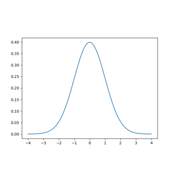
Distribution Class
Statistics
Histogram 1D
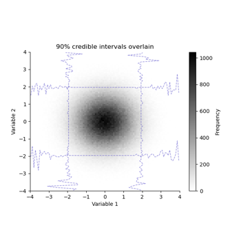
Histogram 2D
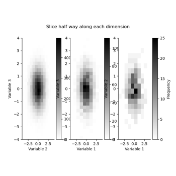
Histogram 3D

Meshes
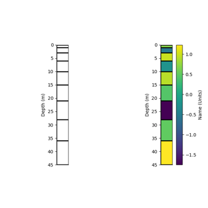
1D Rectilinear Mesh
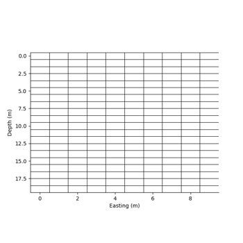
2D Rectilinear Mesh
3D Rectilinear Mesh
Models
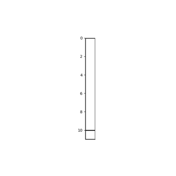
1D Model with an infinite halfspace
1D Model with an infinite halfspace
2D Rectilinear Model

Data


Skytem dataset

Datapoints
Frequency domain datapoint
Skytem Datapoint Class
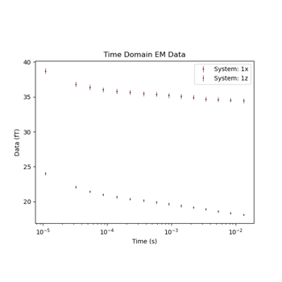
Tempest Datapoint Class
1D Inference
There are a couple of ways to run an inference using geobipy, the first is via command line using
geobipy skytem_options.py <output folder>
The other is with a python script similar to the examples in this folder. In both cases, you will need to write an options file (also shown in these examples)
Running GeoBIPy to invert Resolve data
Running GeoBIPy to invert Resolve data
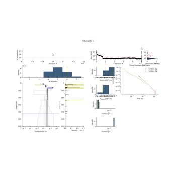
Running GeoBIPy to invert Skytem data
Running GeoBIPy to invert Skytem data
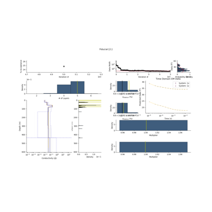
Running GeoBIPy to invert Tempest data
Running GeoBIPy to invert Tempest data
2D Inference
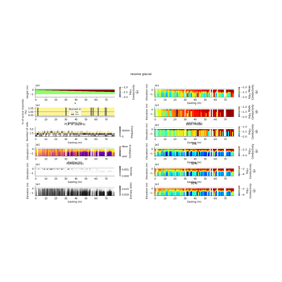
2D Posterior analysis of Resolve inference
2D Posterior analysis of Resolve inference
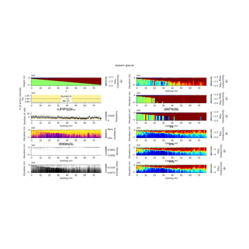
2D Posterior analysis of Skytem inference
2D Posterior analysis of Skytem inference
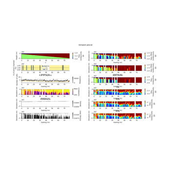
2D Posterior analysis of Tempest inference
2D Posterior analysis of Tempest inference